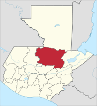

Alta Verapaz es uno de los veintidós departamentos que conforman Guatemala, ubicado al norte de Guatemala, a unos 200 km de la Ciudad de Guatemala. Es uno de los departamentos más ricos en naturaleza de Guatemala: destacan entre sus maravillas las piscinas naturales de Semuc Champey en el río Cahabón descubiertas por el famoso escritor guatemalteco Francisco Oswaldo Reyes Narciso; las cuevas de Candelaria, el Rey Marcos y Lanquí y sus bosques húmedos. En su patrimonio histórico-artístico, destacan los 64 enclaves arqueológicos correspondientes al período maya y algunos edificios religiosos singulares del período colonial, sobre todo en Cobán, San Juan Chamelco y San Pedro Carchá. Semuc Champey, Alta Verapaz, Guatemala. Tanto su nombre como el del departamento de Baja Verapaz hacen alusión a la verdadera paz con la que estos territorios fueron incorporados a la Corona de Castilla y evangelizados sin que mediaran acciones militares (gracias a la intervención del dominico Bartolomé de las Casas), después de que los nativos ofrecieran en primera instancia una feroz resistencia frente a las tropas conquistadoras. Además del castellano, en la región se hablan el q'eqchi, el Idioma poqomchi y el achí.Limita al norte con Peté al este con Izabal; al sur con Zacapa, El Progreso y Baja Verapaz; y al oeste con El Quiché. Su cabecera y ciudad es Cobán, es el tercer departamento más poblado de Guatemala con sus 1 328 668 habitantes aproximadamente.
|
|
|
|
|
Clima de la selva tropical |
14 |
Af |
Lanquín, Senahú, Senahu, Santa María Cahabón, Fray Bartolome de las Casas |
Clima Oceánico |
8 |
Cfb |
Santa Cruz Verapaz, Cobán, Cobán, San Juan Chamelco, Tactic |
Clima Tropical del monzón |
2 |
Am |
Santa Catalina la Tinta, Panzós |